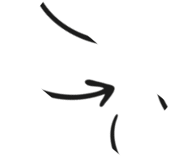
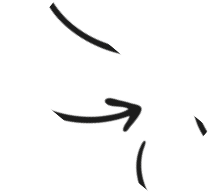

CSIS0234
COMPUTER NETWORKS
Programming Project — HTTP Proxy Server

Total Points
15 Points (Version 1.1)

Deadline
29 Apr 20xx, 5:00 AM
Overview
For this programming project, you are going to implement a web proxy server. This proxy server gets request messages from clients (web browsers), forwards the requests to target web server or another proxy server, obtains the corresponding response messages and sends the responses back to the clients. This proxy server should be able to handle all kinds of objects, not just HTML pages, but also images and audio files. Moreover, this proxy server should support persistent connections; a timeout timer should be used to terminate idle connection from client. To reduce the complexity of this programming project, the proxy server does not support caching mechanism.
 

Objectives
This is a good opportunity to further enhance your Socket programming skill in C/C++.
Through this exercise, you should get a solid understanding of how the text-based networking protocol (such as HTTP) works as well as how to implement a standard networking protocol.
A learning and assessment activity to support ILO2d and ILO4.